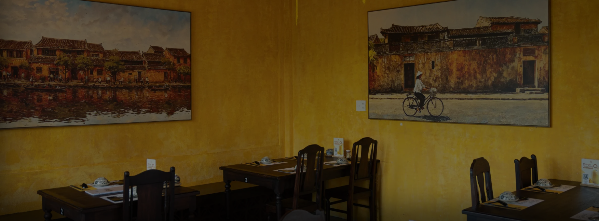
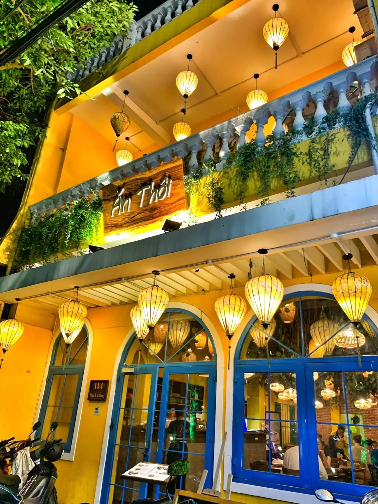
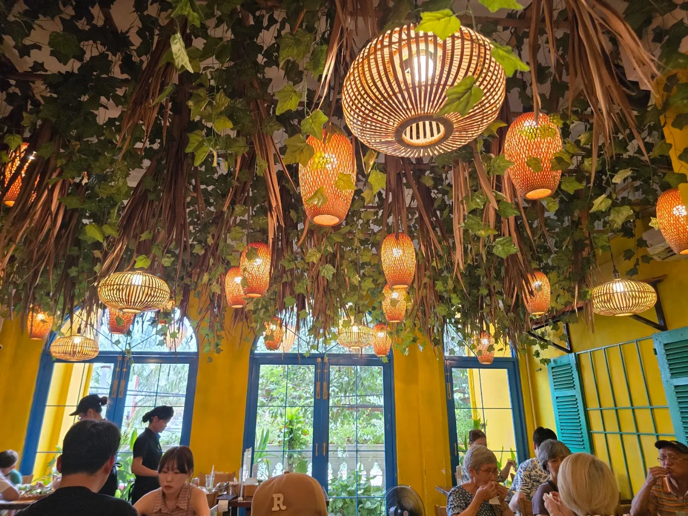

Hội An không chỉ níu chân du khách bởi những con phố cổ rêu phong, ánh đèn lồng lung linh hay nhịp sống bình yên bên dòng sông Hoài, mà còn bởi nền ẩm thực phong phú mang đậm dấu ấn văn hóa miền Trung. Mỗi món ăn nơi đây đều chứa đựng những câu chuyện riêng về lịch sử, con người và nếp sống địa phương.
Từ những món ăn dân dã trong đời sống thường ngày đến các đặc sản đã trở thành biểu tượng của phố cổ, ẩm thực Hội An luôn có sức hấp dẫn đặc biệt đối với những ai muốn khám phá vùng đất này bằng tất cả giác quan.
1. Dấu ấn giao thoa văn hóa trong ẩm thực Hội An

Từng là một thương cảng quốc tế sầm uất từ thế kỷ XV đến XVII, Hội An đã đón nhận nhiều luồng giao lưu văn hóa từ các thương nhân Việt Nam, Trung Hoa, Nhật Bản và phương Tây. Sự giao thoa ấy không chỉ được lưu giữ trong kiến trúc phố cổ mà còn góp phần tạo nên bản sắc riêng cho ẩm thực địa phương.
Ẩm thực Hội An mang nét mộc mạc của miền Trung, kết hợp cùng những ảnh hưởng văn hóa qua nhiều thời kỳ. Các món ăn thường chú trọng sự hài hòa trong hương vị, cách kết hợp nguyên liệu và những loại rau thơm ăn kèm. Không cần quá cầu kỳ, chính sự cân bằng và nét đặc trưng trong cách chế biến đã tạo nên sức hấp dẫn riêng cho món ăn phố Hội.
2. Những món ăn làm nên tên tuổi phố Hội
Nhắc đến Hội An, không thể không nhắc đến những món ăn đã trở thành biểu tượng của vùng đất này.
Cao lầu
Cao lầu gây ấn tượng với sợi mì có độ dai đặc trưng, kết hợp cùng thịt, rau sống và phần nước dùng đậm vị. Món ăn không chỉ hấp dẫn bởi hương vị mà còn gắn liền với câu chuyện văn hóa lâu đời của phố cổ.
Cơm gà Hội An
Cơm gà Hội An lại chinh phục thực khách bởi màu vàng bắt mắt của hạt cơm, phần thịt gà mềm và cách kết hợp cùng rau, gia vị đặc trưng. Sự giản dị trong nguyên liệu nhưng tinh tế trong cách chế biến đã tạo nên sức hút riêng cho món ăn này.
Bánh mì Hội An
Bên cạnh đó, bánh mì Hội An cũng là một trong những trải nghiệm ẩm thực được nhiều du khách yêu thích. Sự kết hợp giữa lớp vỏ bánh giòn, phần nhân phong phú và nước sốt đậm đà tạo nên hương vị khó quên.
Hoành thánh & Bánh vạc
Ngoài những món ăn nổi tiếng kể trên, hoành thánh, bánh bao – bánh vạc và các món ăn dân dã khác cũng góp phần làm phong phú thêm bức tranh ẩm thực phố Hội.
3. Hương vị mộc mạc làm nên nét riêng của ẩm thực Hội An
Điều làm nên sức hấp dẫn của ẩm thực Hội An không chỉ nằm ở những món ăn nổi tiếng mà còn ở cách người dân địa phương gìn giữ hương vị truyền thống.
Nguyên liệu quen thuộc, cách chế biến được truyền lại qua nhiều thế hệ và sự kết hợp hài hòa giữa các thành phần đã tạo nên nét đặc trưng cho từng món ăn. Đặc biệt, rau sống và các loại gia vị ăn kèm thường đóng vai trò quan trọng, giúp cân bằng hương vị và làm nổi bật nét tươi ngon của món ăn.
“Ẩm thực phố Hội mang trong mình tinh thần của đời sống địa phương: gần gũi, giản dị nhưng không kém phần tinh tế. Một món ăn ngon đôi khi không chỉ được nhớ đến bởi hương vị mà còn bởi không gian thưởng thức, câu chuyện phía sau và những khoảnh khắc sẻ chia bên bàn ăn.”
4. Khám phá ẩm thực Hội An – Trải nghiệm không thể thiếu khi ghé thăm phố cổ


Một chuyến đi đến Hội An sẽ thêm phần trọn vẹn khi bạn dành thời gian khám phá ẩm thực địa phương. Dạo quanh những con phố nhỏ, thưởng thức một món đặc sản quen thuộc hay ngồi lại trong một không gian ấm cúng để tận hưởng bữa ăn đều là những cách để cảm nhận rõ hơn nhịp sống và văn hóa nơi đây.
Ăn Thôi Hội An – Điểm dừng chân thân quen
Nếu đang tìm kiếm một điểm dừng chân để thưởng thức ẩm thực khi ghé thăm phố cổ, bạn có thể khám phá Ăn Thôi Hội An, tọa lạc tại 40 Nguyễn Phúc Tần, An Hội. Với định hướng trân trọng nguyên liệu và hương vị ẩm thực Việt, Ăn Thôi mong muốn mang đến cho thực khách những trải nghiệm ẩm thực gần gũi trong hành trình khám phá Hội An.
Dù là lần đầu đặt chân đến hay đã nhiều lần quay trở lại, hãy để những hương vị đặc trưng của phố Hội trở thành một phần đáng nhớ trong chuyến đi của bạn.